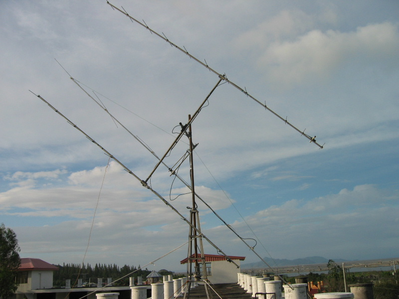
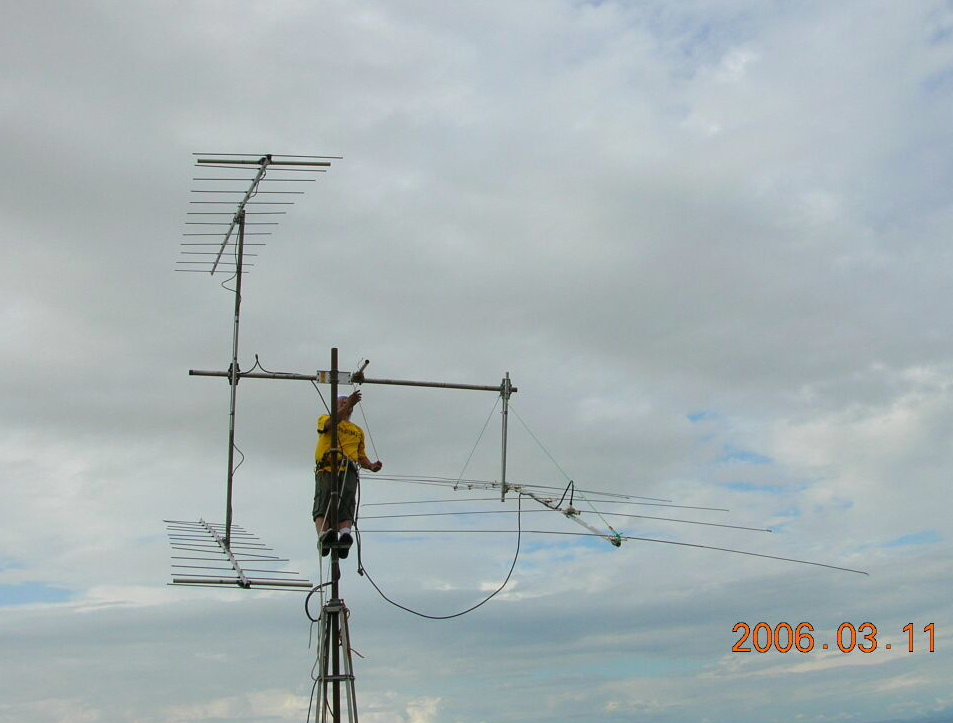
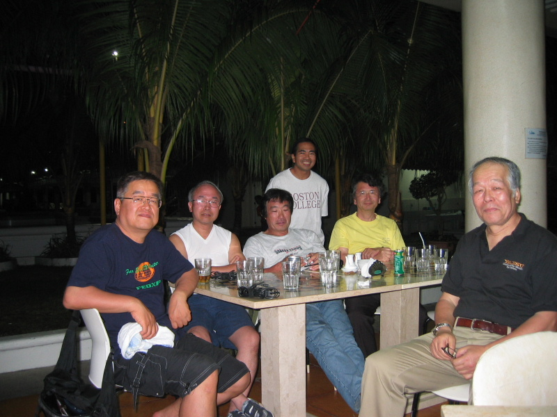
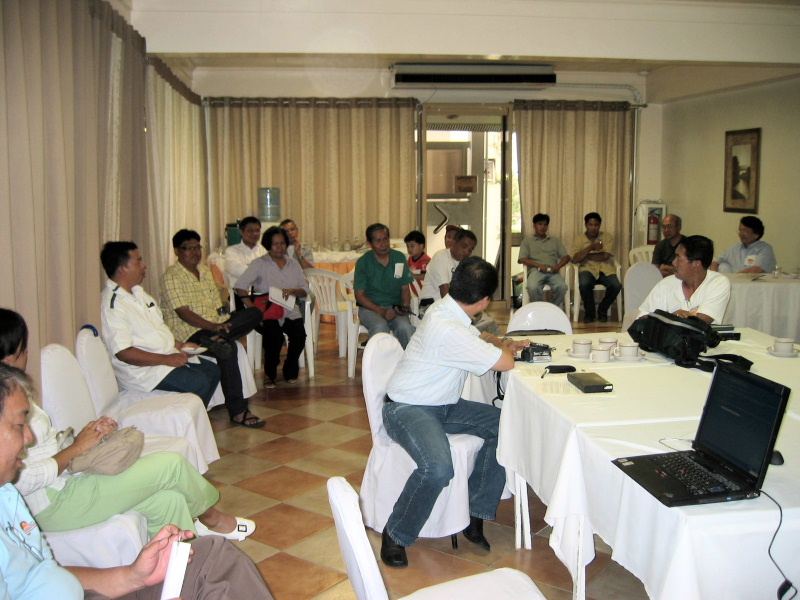
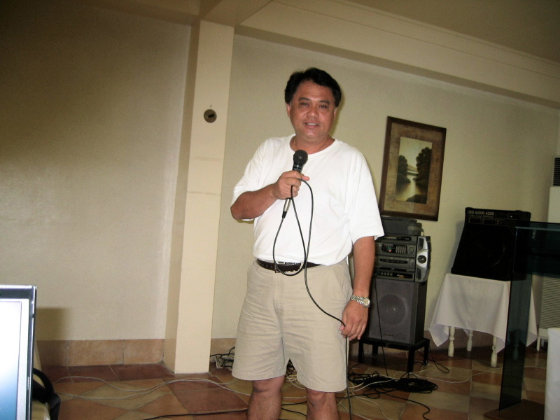
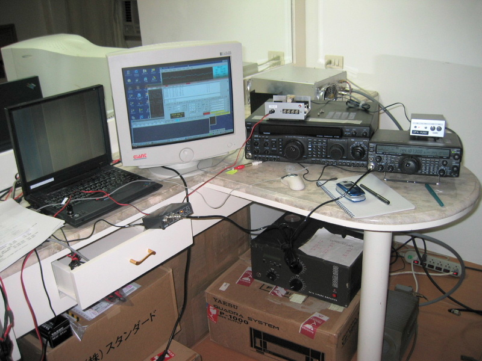
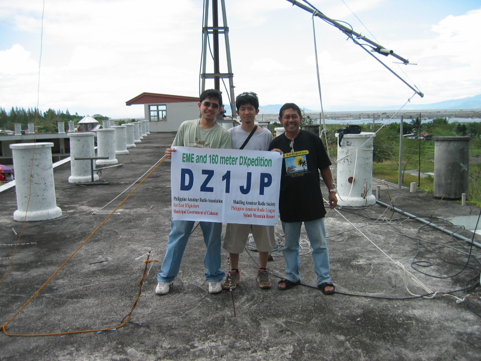
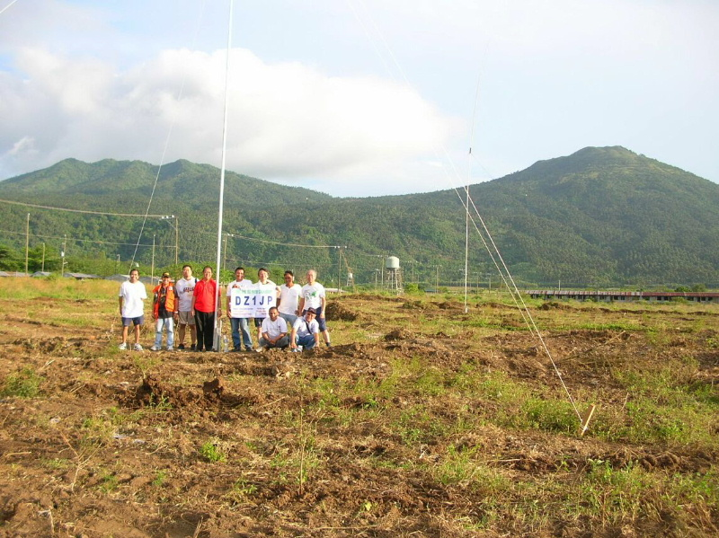
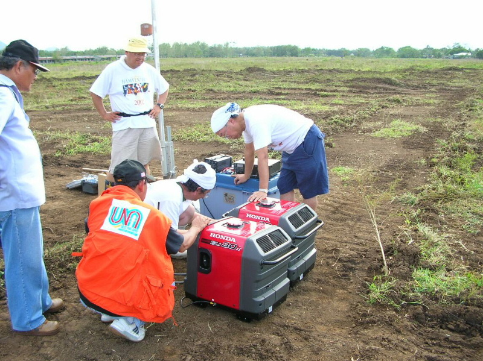
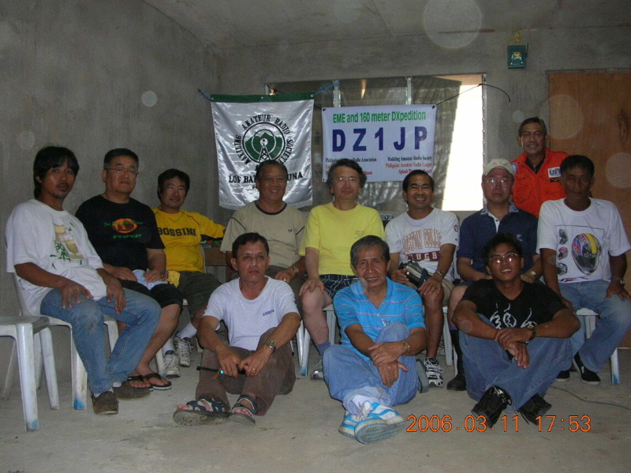

DZ1JP 2006

Philippines
010.Mar-13.mar.2006
|
◎ DZ1JP(フィリピン)で50/144MHzのEMEとLOW・BANDを運用 2006年3月10日-13日の3日間フィリピン(DU)のマニラ近郊のリゾート地/Splash Mountain Resort, Los Ban~os (locator PK04nc)に於いてDZ1JPの運用が行われた。 この運用は後日予定されているPhilippines Spratly Islands(1S)からの運用に備えての機器、アンテナの事前テストを目的に行われた。   設置されたDZ1JPのEME用50MHz・7elX1と144MHz・13elX2(左) 参加メンバー(左から)JF2XGF.JA4DND.JF1IST.DU1EV.JA1BRK.JA1RJU フィリピン滞在中のテスト運用は「LOWバンド・グループ」と「EME・グループ」が2箇所に分かれて運用する事になった。 EME(6m/2m)はCalauan, LagunaのSplash Mountain Resort Hotelから運用された。 160m/75mのローバンドはこのホテルから車で30分ほど離れたLos Banos,Laguna市の広大な空き地を借用して運用された。 |

ホテルの屋上に設置されたDZ1JPのEME用50MHz・7elX1と144MHz・13elX2(左)/現地のハムと。


Splash Mountain Resort Hotelで行われたEMEセミナー
|
50MHzのEMEは3/11日午後の月の出から本格的な運用が開始する予定だったが、
予期しなかった強力な電離層伝搬でJAのオープンがありJA1、2エリアがバンド一面で入感する"アクシデント"でEMEの運用は中止する事になった。
急遽144MHzでのEMEにトライする事になりこの日の50MHzでのJAとのQSOは行わなかった。 50MHzのEMEのQSOは電離層伝搬が良い時には、これが混信となり影響を受けるためEME通信には適さない。 今回は初日から"運悪く"この影響を受けてしまい、BY/UAの49MHz帯のTVのビデオ信号の混信も加わり最悪の状態となってしまった。 "月の出"にスケジュールを組んでいたEMEによる北米とのQSOは残念ながら失敗に終わった。 日本側で気が付かない時間帯でも東南アジア方面ではJAとの良いパスが発生している可能性もありそう。 144MHz帯でのEMEはフィリピンから初の運用だった事もあり全世界的に注目を集めた。 DZ1JPのCQに応答する"ランダムQSO方式"のWSJT(JT65B)での運用と13elX2の八木に350WのパワーながらJA局3局を含むヨーロッパなどを中心に33 QSO(32局)に成功した。 詳細はPARA(Philippne Amateur Radio Association)のホームページWebを通じて速報された。
|


Splash Mountain Resort Hotelに設置されたEMEの機器
地元のクラブ局DX1MKのメンバーと


160/75mのアンテナを設置/セットアップされた発電機X2台

160/75mのシャックで
|
今回のDZ1JPの運用により、年内に予定されているPhilippines Spratly Islands(1S)からの運用に対する各種の機器のテストが出来、
有意義な運用だった。
◎ Final tally of stationa worked on 144MHz EME (DZ1JP=JA1RJU) Germany DF2ZC.DF7KF.DF9KT.DK3BU.DL8GB.DL8YHR.DL9MS Spain EA6VQ Rep.of Ireland EI4DQ Estonia ES5RQ France F6HVK Switzerland HB9Q Japan JH0MHE.JH2COZ.JH5FOQ Finland OH6ZZ.OH7PI Netherlands PA0JMV.PA2CHR.PA3FPQ Russia RA3AQ.RA6DA.RK3FG.RN6BN.RU1AA.RX1AS.UA9FAD.UA9SL Slovenia S52LM Sweden SM5CUI.SM7BAE Poland SP6GWB Greece SV8CS ※ QSO not completed- DL2RMC.ES2CM.G8UUR.KM5ES.RA0FU.W1IPL.W1XE |